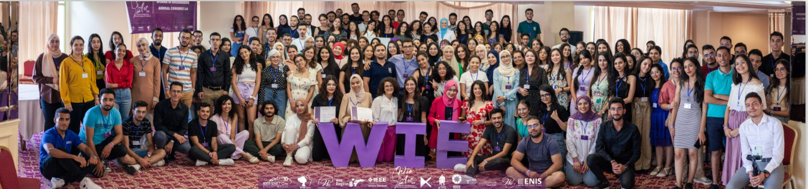
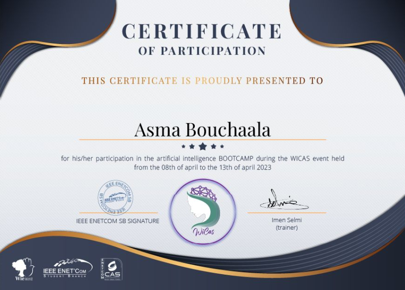
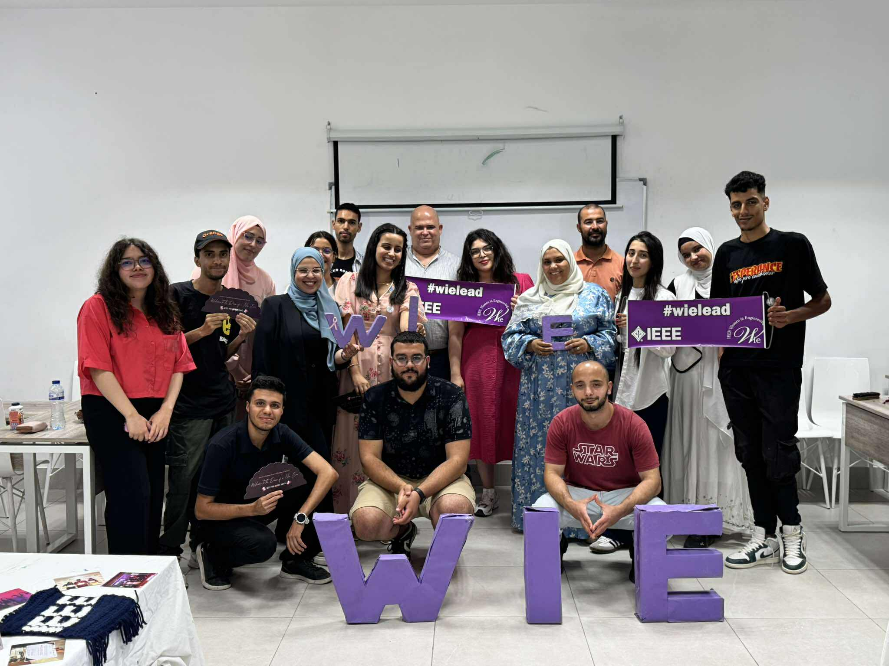

Mes Participations aux Événements Scientifiques et Formations
Participation à l'événement national "Women in Engineering Annual Congress of Tunisia"
Lors de cet événement, j'ai participé à plusieurs ateliers axés sur l'intelligence artificielle (IA), ce qui m'a permis d'approfondir mes connaissances et d'explorer de nouvelles techniques et outils dans ce domaine. J'ai également contribué à l'organisation de l'événement en tant que Media Manager, en prenant en charge la gestion des contenus et de la communication sur les différentes plateformes. Cette double expérience m'a permis à la fois de renforcer mes compétences techniques en IA et mes compétences organisationnelles et en communication, tout en élargissant mon réseau professionnel.
Participation à l'événement WICAS "Women in Circuits and Systems"
Lors de cet événement, j'ai eu l'opportunité de participer au bootcamp sur l'intelligence artificielle (IA). Au cours de cette journée, plus de sept sessions ont été organisées, couvrant différents aspects théoriques et pratiques de l'IA. Cette expérience m'a permis de renforcer mes compétences techniques, d'explorer de nouvelles méthodologies et outils, et de mettre en pratique mes connaissances. À l'issue du bootcamp, j'ai obtenu un certificat attestant de ma participation et de mes acquis dans ce domaine. Par ailleurs, j'ai également contribué à l'organisation de l'événement en tant que Sponsoring Manager, en prenant en charge la gestion des partenariats et des relations avec les sponsors, ce qui m'a permis de développer mes compétences en communication et en gestion de projet.
participation al'evenement wie day
Lors de cet événement, j'ai participé au workshop NVIDIA où j'ai pu approfondir mes connaissances en intelligence artificielle et en technologies graphiques. Ce workshop m'a permis d'acquérir des compétences pratiques et de découvrir les dernières innovations de NVIDIA. L'événement WIE Day a également offert l'occasion de rencontrer des professionnelles et des étudiants passionnés, d'échanger sur les expériences et de développer mon réseau dans le domaine de l'ingénierie.
